Članki
Misli, vpogledi in zapisi o jasnovidnosti, energiji, duhovnem svetu in vsakdanjem življenju.
Misli, vpogledi in zapisi o jasnovidnosti, energiji, duhovnem svetu in vsakdanjem življenju.
je finejših oblik in se sprehaja po našem delu sveta v preoblekah dvoličnosti, opravljanj v smislu laži, neokusnega izkoriščanja tistih, ki so potrebni znanja ne le…
Preberi več →Demokracijo doživljamo kot kažipot h kraju, kjer si v tem trenutku želimo biti, ne pa kot projekt, s katerim bi dosegli točko, v kateri bi morali biti. -Rosalynn Carter-…
Preberi več →
Nova doba se vedno zgodi na pogoriščih včerajšnjega dne, ki vedno že piše zgodovino. Vsakdo bi rad lahkotno, kar se da preskočil viharna obdobja, ki so potrebna za…
Preberi več →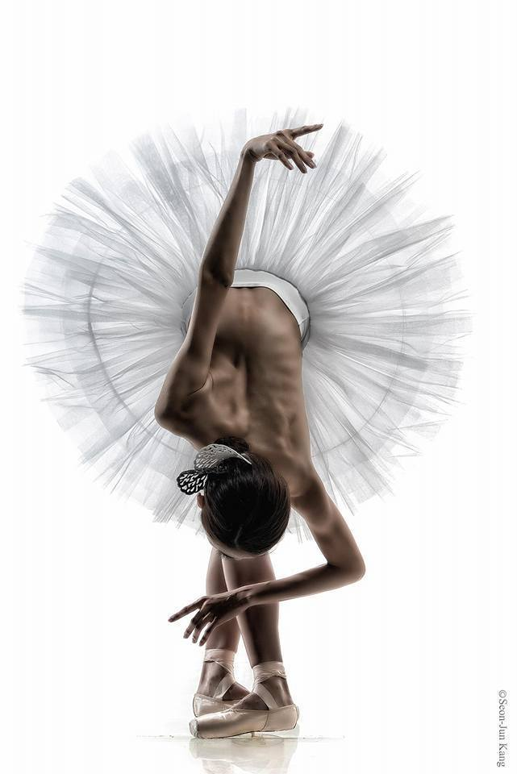
Pride dan, ko si žalosten, da si tak v dejanskosti in v svojem zrcalu spomina. Četudi v sredici samega sebe poznaš svoj odsev in pot, te zamika, da bi želel po…
Preberi več →
Z zaključkom leta razmišljamo o minulem in se znajdemo v neznanih pričakovanjih Novega. Marsikogar slišim ali koga preberem, da naj bi z novimi dnevi naslednjega leta…
Preberi več →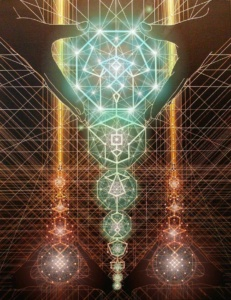
Ob sesutju denarnih hiš iz kart človek hoče pritisniti na hitrost udejanja čudežev, celo na silo, zato velikokrat, tja do lastne lucidnosti. Ob človeški kolektivnosti…
Preberi več →Nagovarjanje na brezmesno hrano zna biti včasih prav tečno nadležno. Sicer pa se prav tako vsiljivo propagira vse sorte drugih ne-umnosti, od orožja, raznih kvazi metod,…
Preberi več →
Učenci ved Nobenega pravega učenca ne zanimajo (iz radovednosti ali drugih naklepov) posli drugih ljudi, razen takrat, ko gre za to, da bi jim pomagal, in da ima pred…
Preberi več →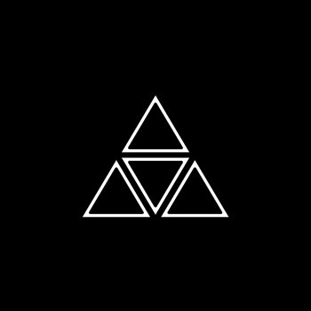
Obstajajo nekateri zavedeni smrtniki, ki so, navkljub temu, da imajo to srečo, da posedujejo rahel dotik te višje moči, popolnoma brez kakršnega koli pravilnega čutenja…
Preberi več →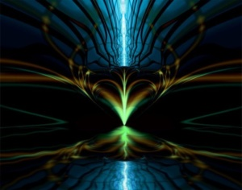
Edina popolnoma varna pot razvoja jasnovidnosti – vstopiti z vso svojo energijo na pot moralne in mentalne evolucije. Na eni izmed stopenj se bodo nato višje sposobnosti…
Preberi več →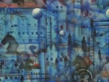
…. še vedno obstajajo ljudje, ki zanikajo možnost napovedovanja prihodnosti, vendar pa takšno zanikanje kaže le na njihovo nepoznavanje dokazov v prid tega predmeta.…
Preberi več →Ob poslušanju žalostnih zgodb moram napisati to, da smo v fazi velike občutljivosti in da je dejstvo, da toliko zaznavamo, prednost in ne ovira. Vzemi in uporabi to. Kot…
Preberi več →Kaj je jasnovidnost? Jasnovidnost dobesedno ne pomeni nič drugega kot “jasno videnje”, in je beseda, ki so jo žalostno zlorabljali in celo ponižali do te mere, da je…
Preberi več →
”, zanimiva je tale tema o vedeževanju ali jasnovidnosti, zato bom skušal tukaj nekaj malega napisati s svojega zornega kota, kakšen naj bi bil odnos vedeževalca do…
Preberi več →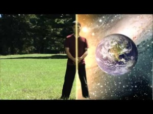
Normal 0 21 false false false SL X-NONE X-NONE Zapremo oči in se udobno namestimo. Osredotočimo se na dihanje in se postopoma sprostimo. Vsak izdih je sproščanje…
Preberi več →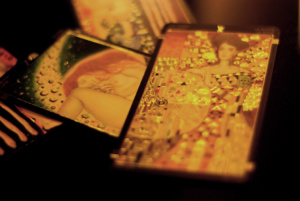
eni so PROTI, drugi so ZANJ, tretji NE-ODLOČENI. Prvi pravijo, da je čisti nateg, drugi navdušeno preizkušajo oglaševalce vedeževanja, tretji se odločajo, pa si nato…
Preberi več →niso le, ali zmeraj, bližine, nestrinjanja, niti pokoritev, še manj malikovanje, niti ne sebičen strah pred odvzetjem tvoje pozornosti. Občudovanje tvoje edinstvenosti…
Preberi več →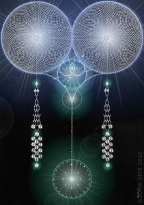
Uživancija res da ni sestavljena iz samih prijetnih občutkov ob žuranju do konca, ob druženju in spoznavanju čudovitosti slehrnosti in slehrnika. Bolj občudujem veličino…
Preberi več →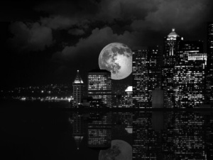
Kot zavedni soustvarjalci realnosti smo to tudi zaradi svojih misli, načrtov, hotenj, ki jih pretapljamo v vsakdanja dejanja. Vabilo skozi Zvezdna vrata je pravzaprav…
Preberi več →Včasih so znanje podajali skozi mite, basni in velike legende. Vere in Magi so strašili ljudi bolj kot je bilo potrebno, vse za oblast in nadvlado. Danes je človek z…
Preberi več →Normal 0 21 false false false SL X-NONE X-NONE Preživljati dneve, zaznati čim več vsega, kar ti pride pred oči, se dotakniti čim več tistega, kar ti pride pod roko, seči…
Preberi več →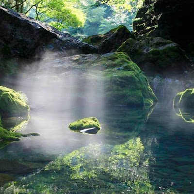
Meditacija … , ki ni vezana na zunanji dražljaj ali dogodek, je v naši kulturi večinoma čas stanja, ki ga umeščamo na urnik svoje vpetosti v način življenja. Pomembno…
Preberi več →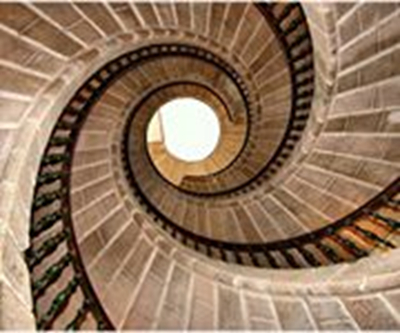
Normal 0 21 false false false SL X-NONE X-NONE Vse, kar izvedemo iz osnovnih sestavin od A do Ž, dobi moč energijskega dela. Ko gre za mojstrsko dovršen obvratni obesek…
Preberi več →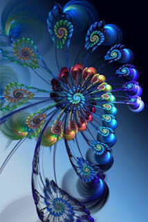
Normal 0 21 false false false SL X-NONE X-NONE Med obilico vsega iščemo zase prvo skupino, ne ravno z nujnostjo delovanja. Bolj je nujna, vsaj zame, usmeritev duha na…
Preberi več →Normal 0 21 false false false SL X-NONE X-NONE Za dobro jutro članek o besednih darilih in mislih Predstavljajmo si, da želimo sorodniku, prijatelju ali znancu podariti…
Preberi več →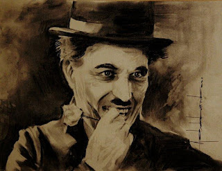
Kaj je solza? In kaj je nasmeh? Ena je temen, drugi svetel del življenja. Solza je biser s semenom, ki pade na prst, kjer vznikne nasmeh. Aurelia Z. Mueller
Preberi več →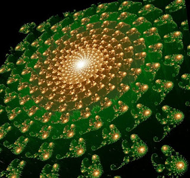
Od vseh slabih in dobrih novic je ta, da čutiš hip, ki traja. Vsaka preteklost nas sicer opredeljuje, a je šla in pustila vpliv v sedanjih občutkih in okoliščini. Vsaka…
Preberi več →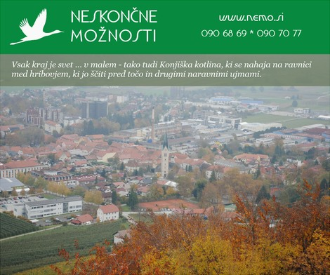
Pogled na mestno jedro Slovenskih Konjic. Ribnik v parku pred dvorcem Trebnik. Baronvaj, nekdanji dom Adelme von Vay. Zadnje počivališče Adelme von Vay. V ospredju bivši…
Preberi več →